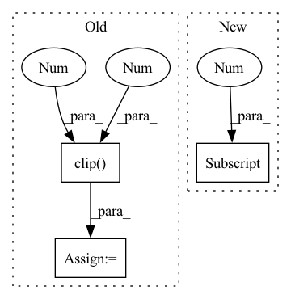

Pattern ID :20029
Before Change
image = np.concatenate(
[self.vae_decoder(latent_sample=latents[i : i + 1])[0] for i in range(latents.shape[0])]
)
image = np.clip( image / 2 + 0.5, 0 , 1 )
image = image.transpose([0, 2, 3, 1])
return image
def prepare_extra_step_kwargs(self, eta):After Change
def decode_latents(self, latents):
latents = 1 / 0.18215 * latents
latents_shape = latents.shape
vae_output_shape = [latents_shape[0], 3, latents_shape[2] * 8, latents_shape[3] * 8]
images_vae = paddle.zeros(vae_output_shape, dtype="float32")
vae_input_name = self.vae_decoder.model.get_input_info(0).nameIn pattern: SUPERPATTERN
Frequency: 3
Non-data size: 3
Instances Fragment ID: 65201568
Project Name: paddlepaddle/paddlenlp
Commit Name: 2b96999ecd879f98d65a0f91c0279cf23d8e2abe
Time: 2023-02-14
Author: 105858416+wwbitejotunn@users.noreply.github.com
File Name: ppdiffusers/ppdiffusers/pipelines/stable_diffusion/pipeline_fastdeploy_stable_diffusion.py
M Class Name: FastDeployStableDiffusionPipeline
N Class Name: FastDeployStableDiffusionPipeline
M Method Name: decode_latents(2)
N Method Name: decode_latents(2)
M Parent Class: DiffusionPipeline
N Parent Class: DiffusionPipeline
M File Name: ppdiffusers/ppdiffusers/pipelines/stable_diffusion/pipeline_fastdeploy_stable_diffusion.py
N File Name: ppdiffusers/ppdiffusers/pipelines/stable_diffusion/pipeline_fastdeploy_stable_diffusion.py
M Start Line: 221
M End Line: 227
N Start Line: 221
N End Line: 237
Before Change
cur_res = inpainted_image[0].permute(1, 2, 0).detach().cpu().numpy()
cur_res = cur_res[0:origin_height, 0:origin_width, :]
cur_res = np.clip( cur_res * 255, 0 , 255 ) .astype("uint8")
cur_res = cv2.cvtColor(cur_res, cv2.COLOR_BGR2RGB)
return cur_res
After Change
return: BGR IMAGE
area = image.shape[1] * image.shape[2]
if area < self.crop_trigger_size[0] * self.crop_trigger_size[1] :
return self._run(image, mask)
print("Trigger crop image") Fragment ID: 65201555
Project Name: sanster/lama-cleaner
Commit Name: 43c9c22c7312dd39feac4e3783e9ec080fd64243
Time: 2022-03-22
Author: cwq1913@gmail.com
File Name: lama_cleaner/lama/__init__.py
M Class Name: LaMa
N Class Name: LaMa
M Method Name: __call__(3)
N Method Name: __call__(3)
M Parent Class:
N Parent Class:
M File Name: lama_cleaner/lama/__init__.py
N File Name: lama_cleaner/lama/__init__.py
M Start Line: 40
M End Line: 55
N Start Line: 50
N End Line: 65
Before Change
// punishment for using power
for a in action:
agent_reward -= 0.00035 * self.MOTORS_TORQUE * np.clip( np.abs(a), 0 , 1 )
// normalized to about -50.0 using heuristic, more optimal agent should spend less
reward[i] = agent_reward
self.scroll = min_x - self.VIEWPORT_W / self.SCALE / 5After Change
state += agent_state
// moving forward is a way to receive reward
sum_reward = self.MAX_MOVE_REWARD * (pos[0] - agent.init_pos[0] ) \
/ (self.TERRAIN_LENGTH * self.TERRAIN_STEP)
// carrying cargo forward is also a way to receive reward Fragment ID: 65201563
Project Name: iffix/machin
Commit Name: 630e9f62da390d790aee78db06d21ac2e21a65bb
Time: 2020-04-18
Author: hanhanmumuqq@163.com
File Name: env/walker/multi_walker.py
M Class Name: BipedalMultiWalker
N Class Name: BipedalMultiWalker
M Method Name: step(2)
N Method Name: step(2)
M Parent Class: gym.Env,EzPickle
N Parent Class: gym.Env,EzPickle
M File Name: env/walker/multi_walker.py
N File Name: env/walker/multi_walker.py
M Start Line: 591
M End Line: 610
N Start Line: 554
N End Line: 592